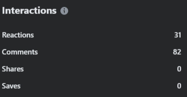
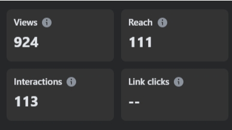

from Passion 10-2
Teampura is formed by a team of enthusiastic individuals from 10-Passion-2. With each individual having different perspectives and standpoint. Teampura is focused on creative and engaging content creation while empathizing with every student. Teampura actively engages in meaningful conversations producing fun and wit-filled discussions.
Welcome to the first quarter. In here, you'll see the results of the first survey the team has conducted in APEC Schools Marikina Heights.
According to our survey, the majority of student respondents are likely to be affected by the pressure of having too many tasks assigned to them. We got similar results with the pressure of short deadlines and the inability to catch up on lessons. To summarize, given their young age, students can easily become overwhelmed when situations spiral out of control. When they don't know which task to prioritize or which to focus on, it's difficult to keep up with their daily activities. Many of the responses are dominated by anxiety rather than confidence.
Based on the results of our survey, they agree that mental health has an impact on students' academic performance and should be prioritized over academics. Having an unstable mental state will have a significant impact on your academic performance. It would have an impact on your ability to focus, be motivated, and learn. Prioritizing mental health ensures that students receive the necessary support to address their emotional well-being, which can lead to improved academic performance and overall well-being. Academic stress related to deadlines and assignments can have a negative impact on one's mental health, increasing the risk of developing anxiety or depression.
Now that our audience analysis is done and approved, we'll head on with planning for the livestream to be held on the next quarter. Here you'll see the promotional poster, stream outline, and the stream layout our group made for the second quarter.
As we prepare and polish our stream plans and outline, we'll now do the long awaited and first livestream for this school year. Below is the completed livestream and the streaming analysis.
Introduction of hosts and the title “#BreakMuna” was introduced when the waiting room was over. Before the hosts read the entries of the form prepared for the audience, they first shared their experiences regarding the topic of academic pressure in a question and answer format asking the following questions:
1. Do you feel pressured in academics?
2. How frequently does academic pressure affect your social life?
3. Does academic pressure affect your mental health?
4. Does academic pressure affect your day-to-day life?
5. Does academic pressure help you improve or the opposite?
6. How do you balance your academics and social life?
7. In what situations do you usually feel pressured?
8. How do you handle pressure? If there are any.
9. Does pressure make you work more efficiently? Why or why not?
10. Do you enjoy studying despite pressure? Why or why not?
After the sharing session, the hosts immediately moved on to reading the entries of anonymous students in the form provided. In this part of the stream, each host read an entry from the form. Then, an insight or a solution to the academic related concern is shared by any volunteering host.
The hosts offered different points of view and featured different ways to cope with the senders’ issue.
A “Be Right Back” screen was presented as the hosts took their 5-minute break. 5 minutes passed and the hosts were back on the stream. Before they continued to address the entries, they had a short interaction with the audience in the chat box and a few shoutouts were made. After a while, the hosts proceeded to read the last batch of the form’s entries. Each and every host had said their coping mechanisms, tips, solutions, etc. to the audience.
As the stream was coming to an end, the hosts spent the last minutes of the stream talking and interacting with the audience in the chat box. Some comments were about the stream’s topic, while some were from the hosts’ family and friends. The hosts entertained the audience by shoutouts and having casual conversations with the viewers through the comments.
Our stream communicated effectively and engaged with the viewers. The hosts and audience were able to share their opinions and experiences, leaving everyone with a deeper understanding of academic pressure. The stream and content flow were very clear and focused on our purpose, which was to help fellow students in dealing with academic pressure. To maintain an enjoyable and light conversation with our viewers, we were able to engage in both formal and informal discussions that made it possible for them to relate with us.
The viewers also didn't have a problem with our audio and lighting setup as we made sure there weren't any problems beforehand. We also included a form that our viewers can participate and share their experiences with confidentiality. As hosts, we want our viewers to feel heard and assure that their feelings are valid, this keeps our stream having a light feeling until the end of the stream. The form we provided was a great help for us since we were having technical difficulties with our chatbox, but with the help of the form, we were still able to engage with our viewers.
Overall, our hosts stayed energetic and focused on our purpose throughout the live stream, which led our viewers to openly share their thoughts comfortably while learning new insights and motivations.
Although the overall performance of the stream is above par, there are some aspects of the stream wherein we could further improve for the next livestream. One factor that creates an area of opportunity is the view count. As seen with the total interactions and views on the appendix, the stream garnered a total of 924 views and 113 interactions. While this may seem live an above average view count, we noticed that as the stream progressed, the views dropped dramatically with the longest timestamp they’ve watched is 2:40. Incorporating other methods of engagement with the viewers may help in making them engaged with our stream therefore having a minimal drop in views.
In line with this, another area of opportunity is the methodology we used to engage with our viewers. As we used a google form to let our viewers share and express their thoughts on our topic, while beneficial, creates a gap in finding accurate data of the responses we received. Another factor that adds into this is the fact that the participant's submissions are anonymous.
The engagement level throughout the stream was moderate, with 113 total interactions that consisted of 31 reactions and 82 comments. The presence of comments indicates that the audience was actively engaged in the discussion, interested in the subject matter. There were no shares or saves, though, which could be an indication that although viewers participated throughout the stream, they were not as likely to share the content further.
The stream had 924 views and reached 111 people, proving that it was capable of drawing an audience. The audience retention graph, however, indicates a steep decline in watch time in the beginning, with the highest viewing time at 2 minutes and 40 seconds, while others lasted only 7 seconds. This indicates that although the subject was able to draw attention, maintaining long-term viewership was difficult.
The level of engagement directly influenced the stream's overall performance by showing that the topic was relevant but may require more interactive elements to maintain audience retention. Since the study focuses on A Study on the Impact of Academic Pressure in the Mentality of SHS Students from APEC Schools Marikina Heights, the engagement data suggests that students may have been interested but possibly preoccupied with academic responsibilities, limiting their ability to stay for extended periods.
Our stream had a high viewership because viewers stuck around our stream because it connected with them on a level of relatability. While our stream was casual, there was a sense of formality that viewers found intriguing. During the stream, the hosts actively talked with the commenters, in which the viewers very much liked. Although there were malfunctions on the chat function, people shared their experiences to the hosts of the stream and the hosts replied with a sincere tone, adding a sense of familiarity that the viewers liked. And finally, the hosts were active throughout the stream, the energy did not go down at all during the stream.
Overall the viewers stuck around because of the comfort, the relatability, the activeness and the sense of familiarity that they felt when they watched the stream.
In this table, the watch time for the stream has dropped and the longest timestamp they’ve watched is 2:40 while the shortest is 0:07.
This table shows how many interactions the audience has during the stream. 31 reactions such as; heart, like, and laughter—whereas the audience has left 82 comments.
This table shows that the stream gained 924 views, 111 people reached, and 113 interactions in total.
As we head on the very last quarter for this school year, we will now see the very last stream our group has made. In addition to this, we'll also witness the team's very own PechaKucha.
Our last livestream
TeamPura's PechaKucha